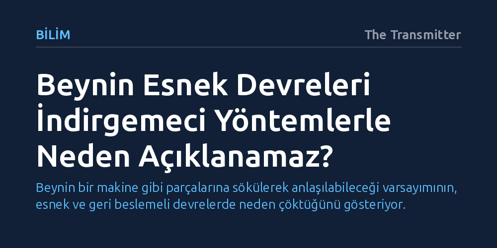

BILIM · The Transmitter · 2026-10-20
Tek bir amaca adanmış sıralı beyin devrelerinde işe yarayan parçalara ayırma yöntemi, beynin genel amaçlı ve geri beslemeli devrelerinde geçersiz kalıyor. Bu esnek ağlarda sinyaller tüm beyin ve beden arasında kapalı döngülerde dolaştığı için bölgeleri tek tek yalıtarak işlevlerini çözmek imkânsızlaşıyor.
Beynin bir makine gibi parçalarına sökülerek anlaşılabileceği varsayımının, esnek ve geri beslemeli devrelerde neden çöktüğünü gösteriyor.

Sinirbilim dünyasında uzun süredir hâkim olan mekanistik yaklaşım, beyni saat mekanizması gibi parçalarına ayırıp her bir parçanın işlevini ve birbiriyle etkileşimini çözerek anlama temeline dayanır. Bu yöntem, yazarın araştırmacılık kariyerinin ilk yıllarında olağanüstü sonuçlar verdi: Retinanın hareketi nasıl işlediği veya zebra ispinozlarının nasıl şarkı söylediği incelenirken, fotoreseptörlerden gangliyon hücrelerine ya da şarkı çekirdeklerine uzanan sinirsel hatlar adım adım takip edilebiliyordu. Karmaşık bir devre hesabı, nöronların ve bağlantıların özellikleriyle açıklanabilen yalın işlem basamakları dizisi olarak berrak biçimde ortaya çıkıyordu.
Bu başarıdan cesaret alan araştırmacı, aynı analitik yaklaşımı memeli korteksine ve sıçanların motor beceri öğrenimine taşımaya karar verdi. Mantık basitti: Sıçanlar bir bakıma tüylü ötücü kuşlardı ve daha önce işe yarayan indirgemeci araçların burada da sonuç vermesi bekleniyordu. Ancak memeli motor devresi incelendiğinde bu varsayım çöktü. Ne kadar ayrıntılı kaydedilirse edilsin nöronal aktivite, devrelerin gerçekte ne yaptığını ele vermemeye başladı. Hatta lezyon deneyleriyle davranışa tamamen farklı katkılar sunduğu kanıtlanan iki ayrı beyin bölgesi, kayıtlarda neredeyse birbirinin kopyası sinirsel temsiller sergiliyordu. Nöronları optogenetikle susturmak gibi doğrudan müdahaleler de çözümsüz kaldı; çünkü bu yöntemler hedeflenen bölgenin ne hesapladığını değil, yalnızca sarsılan sistemin bu dış müdahaleye nasıl tepki verdiğini gösteriyordu.
Retina ve kuş şarkısı devrelerindeki erken başarıların ardında iki temel nitelik yatıyordu. İlk olarak bu devreler, evrimsel süreçte sınırları çok iyi tanımlanmış tek bir görevi çözmek üzere özelleşmişti. Belirgin anatomik yapıları, adeta parça listesi ve test edilmeye hazır hipotezler içeren açık bir kullanım kılavuzu gibiydi. İkinci olarak bu devrelerdeki hesaplama, sıralı ve ileri beslemeli bir akış izliyordu: Sinyal giriyor, aşamalar halinde işlenip dönüştürülüyor ve çıkışa ulaşıyordu. Her aşamada sinyalin nasıl yeniden şekillendiği, o aşamanın neyi hesapladığını doğrudan gösteriyordu.
Korteks ve striatumdaki devreler ise tamamen farklı bir evrimsel mantıkla şekillenmiştir. Bu yapılar tek bir göreve adanmak yerine yüksek esneklik sunacak biçimde, hayvanın o an yürüttüğü her türlü göreve koşulabilecek genel amaçlı işlemciler olarak evrilmiştir. Tek bir devrenin sayısız görev ve bağlamda kullanılabilmesi hayvanın uyum yeteneği açısından büyük bir kazanç olsa da araştırmacı için içinden çıkılmaz bir karmaşa yaratır. Korteksin katmanları ve striatumun hücre tipleri mevcuttur; ancak bu yapılara bakarak tek bir görevle temiz biçimde örtüşen, açık ve yanlışlanabilir bir hipotez kurmak imkânsızdır. Çok sayıda göreve aynı anda hizmet eden devrelerde, tek bir işleve indirgenebilecek yalın bir parçalama modeli bulunmaz.
Genel amaçlı bu devreler karmaşık bir motor görev üzerinden incelendiğinde tablo daha da karmaşıklaşır. Söz konusu devreler yalnızca hangi göreve çağrıldıklarını takip etmekle kalmaz; aynı zamanda her an nasıl bir performans gösterdiklerini izleyip değişen koşullara göre kendilerini ayarlamak zorundadır. Devrede son derece baskın olan geri besleme (özyineleme) tam olarak bu amaca hizmet eder. Ne var ki bu geri besleme, devre aktivitesini çözümlemeyi olağanüstü zorlaştırır. İleri beslemeli devrelerin sıralı girdi-çıktı dönüşümü burada geçerliliğini yitirir; çünkü devrenin aktivitesi, kendi çıktısının beynin pek çok diğer bölgesinden geçip başkalaşarak geri dönmüş halidir.
Tüm bölgeler aynı dolaşımdaki sinyal havuzunda yıkandığı için, paylaşılan bu ortak sinyal bileşeni her bölgenin kendine has özgül katkısını gölgeler. Lezyon deneylerinde tamamen farklı roller üstlendiği görülen bölgelerin kayıtlarda neredeyse farksız temsiller sergilemesinin temel nedeni budur. Dahası bu döngü sadece beyin içinde kapalı kalmaz; doğrusal olmayan, eylemsizliğe ve kendi mekanik sınırlarına sahip olan bedenin içinden de geçer. Böylece sistem, beyin ile beden arasında kesintisiz akan dinamik bir geri bildirim ağına dönüşür.
Böylesine karmaşık ve dağıtık bir sistemi yönetilebilir küçük parçalara ayırma dürtüsü modern bilimin en temel alışkanlıklarından biridir; ancak geri beslemeli mimarilerde bu indirgemeci yaklaşım karşılık vermeyi bırakır. Yazarın durumu özetleyen çarpıcı ifadesiyle: 'Cut a loop, and you just get a broken loop' (Bir döngüyü kestiğinizde elinizde sadece kırık bir döngü kalır). İleri beslemeli bir zinciri kestiğinizde her biri kendi koşullarında gözlemlenip incelenebilen iki parça elde edersiniz; ancak kapalı bir döngüyü parçalara ayırdığınızda elinizde işlevini tamamen yitirmiş anlamsız bir sistem kalır.
Bu açmaz, karmaşık davranışları incelerken sinirbilimin 'anlamak' kavramını baştan tanımlaması gerektiğini ortaya koyuyor. Nöronları tek tek susturarak veya beyin bölgelerini yalıtarak mekanistik modeller kurmaya çalışmak, dolaşımdaki bütünleşik dinamik ağı kavramaya yetmiyor. Beynin esnekliğini borçlu olduğu geri beslemeli yapıyı çözebilmek, parçalara odaklanan indirgemeciliğin ötesine geçip sistemin tamamını kapsayan yeni teorik yaklaşımlar geliştirmeyi zorunlu kılıyor.